search
language
Experience the wild beauty of From the serengeti to Mahale Chimpanzees
Embark on an extraordinary 14-day cross-border safari that takes you through Kenya and Tanzania's most iconic wildlife destinations. This carefully curated journey combines prime wildlife viewing with cultural immersion in some of Africa's most breathtaking landscapes, from the elephant-rich plains of Amboseli to the legendary Masai Mara and the spectacular Serengeti.
Experience the raw power of nature as you follow the path of millions of wildebeest and zebra during their annual migration. Witness the dramatic river crossings in Northern Serengeti, explore the Ngorongoro Crater's unique ecosystem, and discover Tarangire's ancient baobab forests. Each day offers unparalleled game viewing opportunities and cultural encounters.
Our expert guides will share their deep knowledge of animal behavior and migration patterns, ensuring you're positioned for the most incredible wildlife spectacles. With comfortable accommodations and seamless logistics, you can focus entirely on the breathtaking safari experience across two of Africa's most famous safari destinations.
This journey is designed for wildlife enthusiasts and photographers seeking to witness nature's greatest events across international borders. Whether you're tracking the Great Migration or exploring diverse ecosystems, this itinerary offers an authentic African adventure filled with unforgettable moments.
Today's Highlight: Relaxed arrival and orientation; first taste of Kenyan hospitality.
Distance / Time: Airport transfer: 30–45 mins (depending on hotel location).
Arrive at Jomo Kenyatta International Airport, where a friendly representative will be waiting to welcome you to Kenya. From the moment you step off the plane, the anticipation of adventure begins. You will be transferred to your Nairobi hotel, enjoying a smooth ride through the city's bustling streets and scenic surroundings. After check-in, take some time to rest, refresh, and acclimate, preparing for the exciting journey ahead.
In the evening, enjoy a gentle introduction to Kenya perhaps a relaxed dinner at the hotel or a nearby restaurant, accompanied by a brief orientation with your guide. This is your first chance to soak in the sights, sounds, and energy of the country, and to reflect on the adventure that awaits. End the day with a peaceful night's rest, ready to begin your safari the following morning.
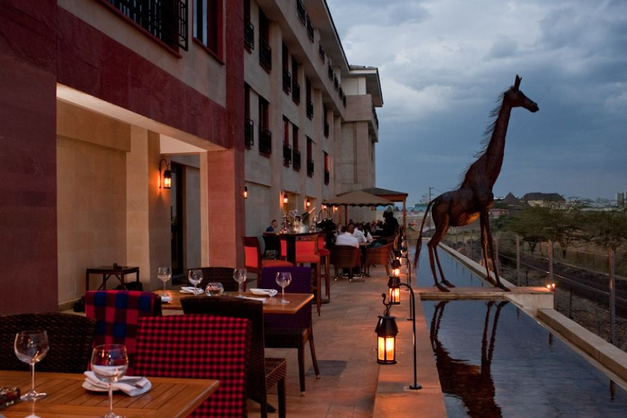


Today's Highlight: The first sight of elephants beneath Kilimanjaro's gaze.
Flight: ~45 min (Wilson → Amboseli Airstrip) • By Road: ~215 km | 4–5 hrs
Board a morning flight over Kenya's patchwork of farmland and acacia-dotted plains toward the southern frontier of Amboseli National Park. From the air, the scenery unfolds like a moving painting shimmering salt pan, winding rivers, and the commanding silhouette of Mount Kilimanjaro rising beyond the horizon. Your safari begins the moment you land. En route to camp, herds of zebra and wildebeest graze against an endless sky, and the first elephants appear calm, immense, and unhurried. In the golden light of afternoon, set out on your inaugural game drive across Amboseli's open plains. As the sun dips low and the snow-capped peak of Kilimanjaro blushes pink, you'll see why this park has captured the imagination of photographers and travelers the world over.
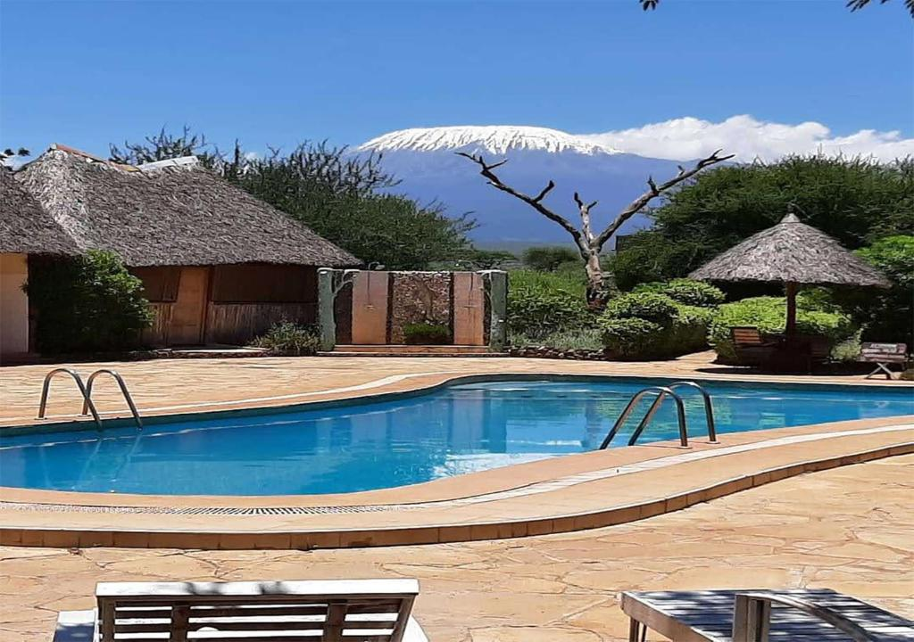
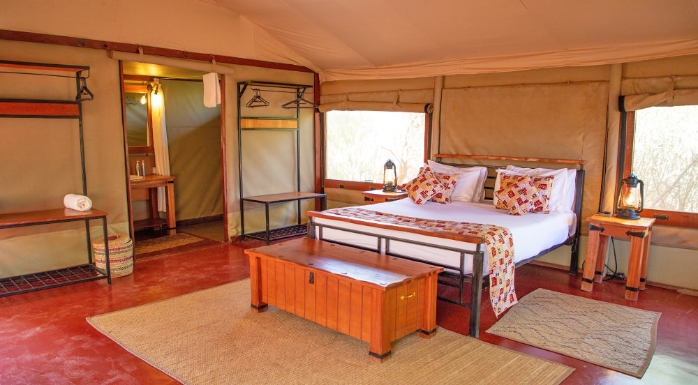
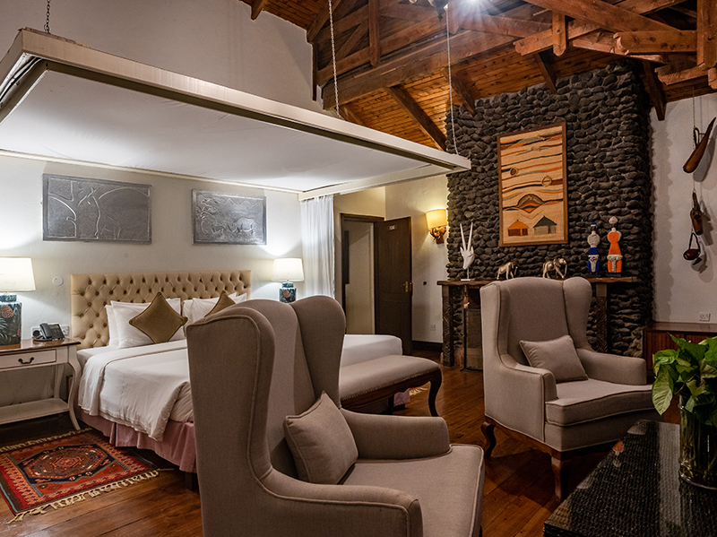
Today's Highlight: Golden dawn with Kilimanjaro revealed.
Distance / Time: Short internal drives within the reserve for morning and afternoon game drives.
Rise before the sun and watch Kilimanjaro emerge from morning mist a breathtaking sight that defines Amboseli. The park stirs to life: elephants bathe in marshes, crowned cranes dance in the reeds, and lions prowl in the amber light.
Spend the day on unhurried drives, soaking in the rhythm of the wild. Visit Observation Hill for sweeping views or pause at the swamps where hippos wallow lazily. In the afternoon, perhaps visit a Maasai village, where vibrant beadwork and rhythmic songs reveal an ancient culture still intertwined with the land.
Evening brings peace the call of a nightjar, the glow of lanterns, and the distant silhouette of the mountain under a canopy of stars.
Today's Highlight: Your first encounter with the Masai Mara's incredible wildlife where every scene feels like a page from a living documentary.
Flight: Amboseli → Nairobi → Masai Mara (~2 hrs total) • By Road: ~450 km | 7–8 hrs
After breakfast, board your flight to the legendary Masai Mara, a name that conjures visions of endless plains and untamed beauty. From the window, the scenery transforms from Amboseli's wetlands to golden savannahs rippling toward the horizon. As the aircraft descends, scattered acacia trees, winding rivers, and clusters of wildlife come into view a preview of the adventures ahead.
Upon arrival, your first game drive begins almost immediately. The Mara greets you with raw vitality lion prides sprawled in the shade, elephant herds lumbering through tall grass, and cheetahs perched on termite mounds, scanning the plains for movement. Every turn brings a new discovery, every moment a chance to witness the ancient rhythm of predator and prey.
As the sun melts into the horizon, you return to your camp the air alive with distant calls of hyenas and the soft glow of lanterns welcoming you to your first night in Kenya's most iconic wilderness.
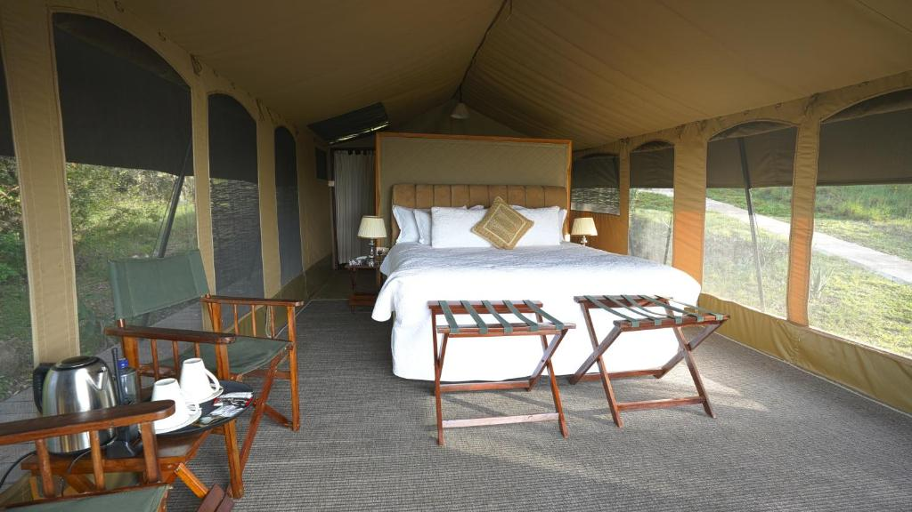
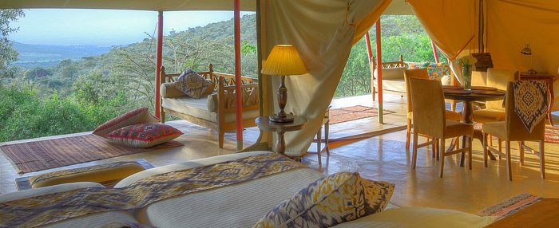
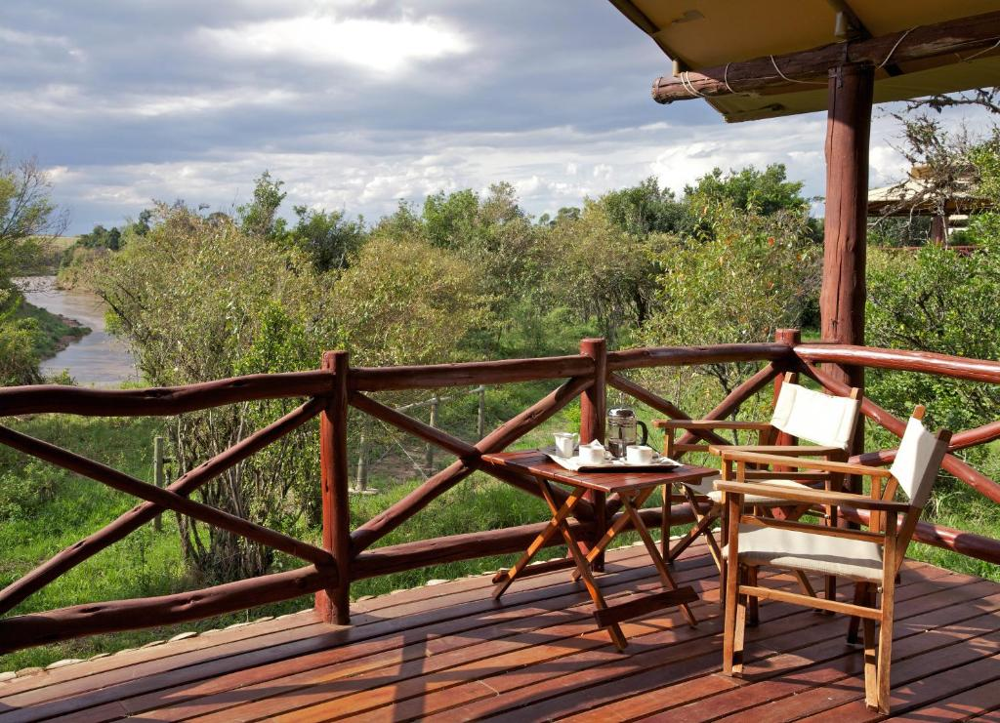
Today's Highlight: Immersive days of endless discovery — from dawn safaris to starlit evenings, each moment in the Mara deepens your connection to the wild.
Two full days in the Masai Mara reveal the living pulse of untamed Africa a landscape where every sunrise brings new stories and every sunset lingers in memory.
At dawn, the golden light spreads across the plains as antelope herds drift through morning mist, their silhouettes framed by acacia trees. The air is alive with birdsong and the distant call of a lion. As you venture deeper, the Mara River becomes a natural theatre hippo grunting in muddy shallows, crocodiles basking motionless on sun-warmed banks.
During the Great Migration (July–October), this tranquil scene transforms into a breathtaking spectacle: tens of thousands of wildebeest and zebras surge across the river in a surge of instinct and chaos, testing the patience of crocodiles lying in wait. Yet even outside migration season, the Mara teems with life lion prides guarding their territory, leopards reclining in fig trees, and cheetahs sprinting across open plains in flashes of speed.
Between drives, return to camp for relaxed lunches and time to rest before the evening's adventure. Optional highlights include a sunrise hot-air balloon safari, floating silently above the plains as the world awakens below; picnic breakfasts amid the wilderness; or cultural visits to Maasai villages.
Today's Highlight: Two countries, one uninterrupted wilderness.
By Road: ~6–8 hrs including border crossing
After breakfast, depart the Masai Mara and journey south through the Mara Triangle, leaving Kenya behind at the Isebania border. The transition between countries is seamless no walls, only the vast, rolling expanse of savannah, dotted with acacias and wandering wildlife.
As you drive deeper into Tanzania, the scenery evolves gentle hills give way to the iconic plains of the Northern Serengeti. Herds of giraffes stretch their necks to feed, while topis and eland move gracefully across the horizon. The low sun bathes the landscape in golden light, turning every tree and animal into a living silhouette.
Arriving at your camp as twilight falls, the Serengeti greets you with flickering lanterns and the distant calls of hyenas and lions. This is the first night in a world of endless horizons, where the pulse of the wild becomes your own.
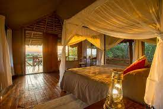
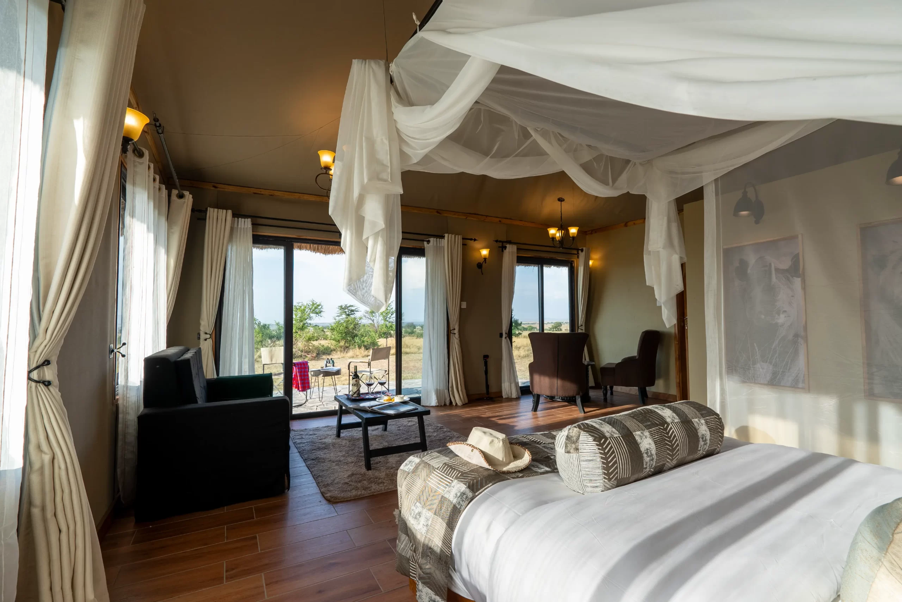
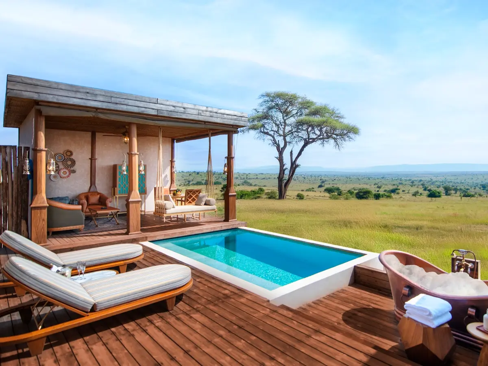
Highlights: Witnessing the Serengeti in motion whether it's the dramatic pulse of the Migration, the stealth of predators, or the serene wanderings of the plains' giants.
Spend three unforgettable days in the Northern Serengeti, a land where the rhythm of life beats raw and untamed. Each day begins at dawn, when golden light spills across endless plains and the calls of the wild awaken the senses.
Game drives follow the Mara River, where, during migration season, thousands of wildebeest and zebras thunder across crocodile-infested waters, while lions and hyenas lie in patient wait. In quieter months, the plains are serene yet vibrant lion prides laze on granite kopjes, elephants drift gracefully through acacia groves, and eagles soar overhead in wide circles.
Afternoons provide a gentle contrast: return to camp for a leisurely lunch, a swim, or a quiet moment on a shaded veranda. Optional activities include guided nature walks, photography safaris, or sundowners atop rocky kopjes, where the sky erupts in deep oranges and purples while distant roars echo across the savannah.
Highlight: Standing at the rim of the world a breathtaking panorama that captures the grandeur and scale of Ngorongoro Crater.
By Road: ~145 km | 3–4 hrs • By Flight: ~1 hr (Serengeti → Manyara Airstrip) + ~2 hrs drive
Depart the Serengeti after a final morning drive through the sweeping plains, keeping an eye out for a last pride of lions lounging atop rocky kopjes or a solitary cheetah stealthily moving through tall grasses. As the day unfolds, the terrain gradually rises toward the Ngorongoro Conservation Area, and the landscape begins to shift from endless golden plains to the rolling highlands and crater rim vistas.
By afternoon, arrive at the Ngorongoro Crater rim, a vantage point that feels almost otherworldly. Below, the crater floor stretches out like a natural amphitheater, teeming with wildlife and framed by ancient, mist-draped walls. The cool air carries the scent of damp earth and grass, while the light softens, setting the stage for tomorrow's full exploration.
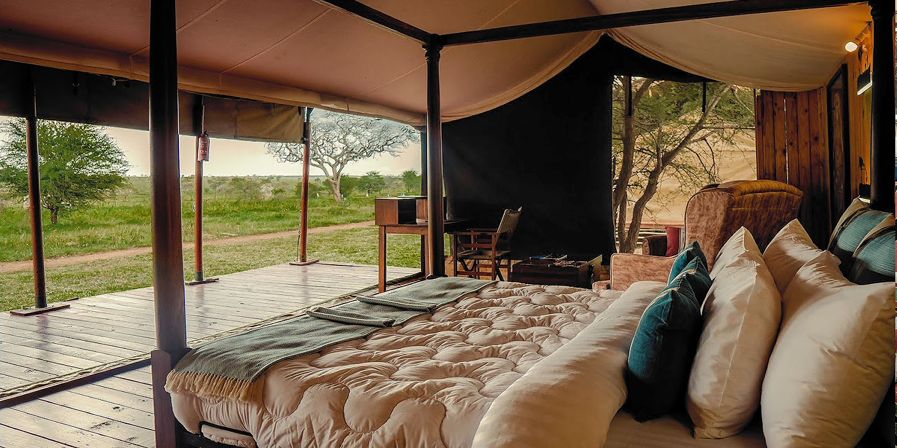
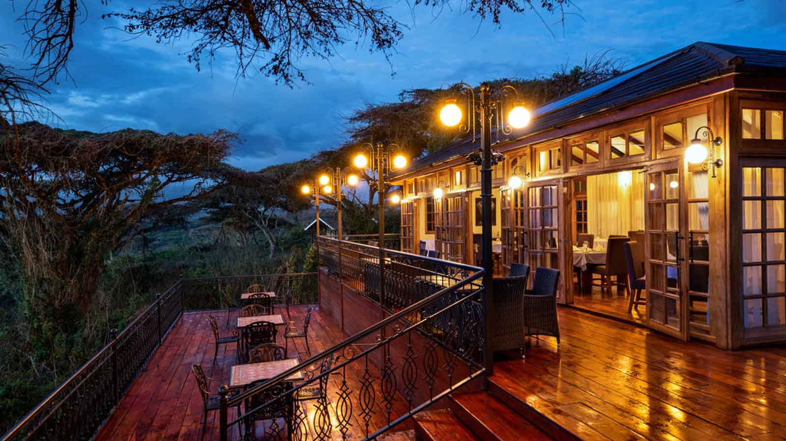
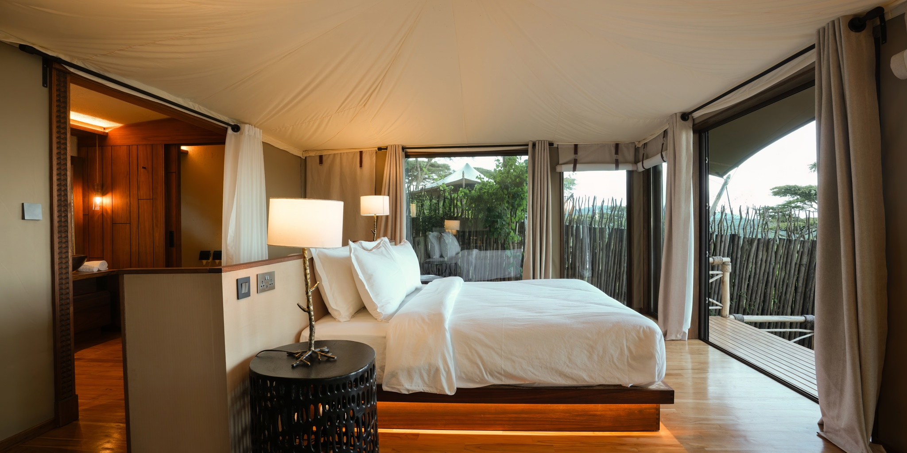
Highlight: Immersing yourself in two distinct ecosystems in a single day the vibrant microcosm of Ngorongoro and the majestic baobab-studded plains of Tarangire.
Drive: ~170 km | 3–4 hrs
At the first light of dawn, descend 600 meters into the Ngorongoro Crater, a natural amphitheater that seems frozen in time. The caldera teems with life rhinos grazing serenely, lions prowling the grasslands, elephants wandering through acacia groves, and flamingos painting shallow lakes pink. Each turn of the vehicle offers a new tableau, a snapshot of Africa in its purest form.
After a picnic lunch beside the hippo pool, continue your journey to Tarangire National Park. The scenery shifts dramatically: expansive plains dotted with towering baobab trees, herds of elephants moving lazily along the Tarangire River, and a landscape alive with birdsong and gentle breezes. By evening, arrive at your lodge or camp, where the sounds of the bush accompany your first night in Tarangire.
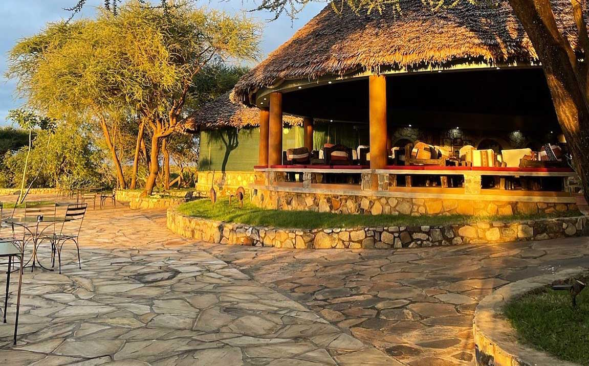

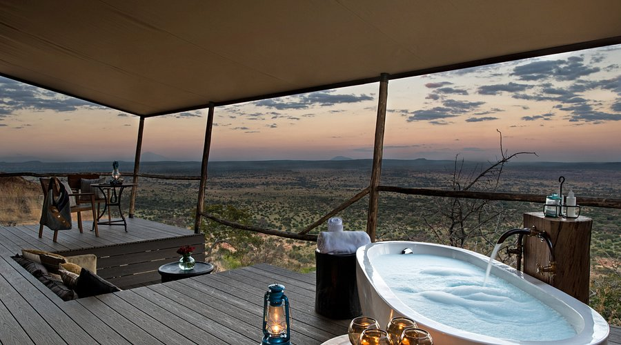
Highlight: Experiencing the bush on two levels on foot at dawn and under the stars at night, gaining a profound, intimate connection to Tarangire's wildlife.
At sunrise, embark on a guided walking safari accompanied by an experienced, armed ranger. Every sound and scent of the bush is heightened the crunch of dry grass beneath your feet, the whisper of wind through ancient baobabs, and the distant call of hornbills and other birds. Along the way, learn to interpret animal tracks, identify plants with medicinal uses, and gain an intimate understanding of the ecosystem that surrounds you.
After a relaxed dinner, venture out once more under a sky blanketed with stars. The night game drive reveals a hidden world: civets slipping silently through underbrush, leopards stalking in shadow, and playful bush babies leaping from tree to tree. The nocturnal rhythms of Tarangire offer a completely different perspective on the wild, leaving lasting impressions long after the sun rises again.
Highlight: A final, intimate encounter with the wild a farewell to Africa's golden landscapes and the memories of a journey unlike any other.
Begin your final morning with a short game drive, catching one last glimpse of elephants wandering among ancient baobabs, impalas grazing in soft dawn light, or perhaps a lone giraffe silhouetted against the horizon. Savor these quiet moments the gentle rustle of leaves, the distant calls of birds, and the golden glow of sunrise illuminating the plains.
Return to camp for a hearty breakfast before departing for Arusha or Kilimanjaro International Airport for your onward flight. As your plane ascends, glance down at the mosaic of plains, rivers, and forests, landscapes that will remain etched in memory, carrying the rhythm, color, and spirit of Africa long after your journey ends.
End of Itinerary
Compare prices across different group sizes for this comprehensive Kenya & Tanzania adventure
| Number of People | Mid-Range | Luxury | High End |
|---|---|---|---|
| 1 Person | $14,253 | $17,689 | $30,834 |
| 2 People | $9,694 | $11,683 | $22,699 |
| 3 People | $9,461 | $11,994 | $24,499 |
| 4-8 People | $8,314 | $10,599 | $21,690 |
| 6-12 People | $8,682 | $11,057 | $23,270 |
Experience the wild like never before with our expertly crafted safaris